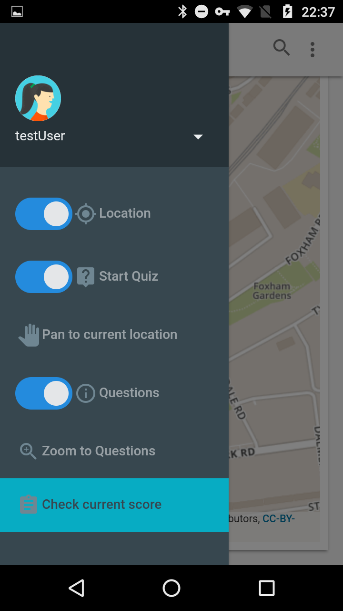

Help
This help is for users who use the location-based quiz. There are three functions guilded in this help: How to login, How to do the quiz, and How to findout the questions.
In order to go back to the app click 'Back to App' at the bottom of this page.
Please contact your admin, if you need to manipulate any questions on the quiz.
If any further help is needed, plese contact w.kumthonkittikul@ucl.ac.uk
How to login
Content:
Login with your account
Login with your account
Type username and password. Then click 'Login'
If your username or password or both are not correct, the login window would show as below.

If the user could login succesfully, there are a message shown as below. Click OK to go into the app.
Create new account
Click 'Click Here' button at the login window
Type username and password. Then confirm password and click 'Create' button.
If the password and confirmed password do not match, there will be a massage shown as below
If the username is already taken, there will be a massage shown as below. So, change to the other username and try again
If the account is created succesfully, the account will be login automatically. There are 2 massages reporting as shown below.

Logout from the system
Click home button at the top-left conner

Click dropdown arrow, beside your username. Then click 'Logout'
How to do the quiz
Content:
Start the quiz
Start the quiz
Click home button at the top-left conner

Activate the 'Start Quiz' button
Note that: this button will automatically activate current 'Location' button, since the current location is needed to do the quiz. The 'Start Quiz' button will also be automatically deactivated, if the Location is tuned off
In order to learn more about current location button, please see Track my location
Answer the question
The question will be automatically popped up, if the user's location is within a 100-meter distance from any unaswered question. The question would not change until the user answer the poped up question
In order to learn more how to find questions and get more details about question, please see 'Find Locaion'
Drag/scroll down to see all posible choices, if it is needed. Tap on the box(choice) to select your answer. Then the app will ask you to confim your answer
The app will show the correct answer by Green colour
If you select correct answer:
If you select wrong answer:
Your current score will be summarised below. Click Next to continue
Check your score
Click home button at the top-left conner
Click at 'Check current score' button
The app will report your current score and show how many questions that the user hasn't answered
Track my location
At the side menu, click 'Location' button to track the device's current position
Note that, the auto pan will initailly activated, to track the position. However, this would be deactivated, if the users drag the map or in some situations
In order to reactivate auto pan, click 'Pan to current location.'
How to find questions
In order to find all questions, both answered and unaswered, click on the 'Questions' button at the side menu.
At some situations -i.e. the quiz is activated, the map would not zoom to all questions automatically. However, you can zoom and pan to all questions by the 'Zoom to Questions' button.
The question that the current user hasn't answered will be shown in gray marker. Red repesents the answered questions that the user answered wrong, while the correct is green
Tap on the marker to get more info
Tap on the answered markers will show the detials about questions
Tap on the unanswered markers will offer you to be navigated there by Google Map. Click at the link to get directions from Google Map